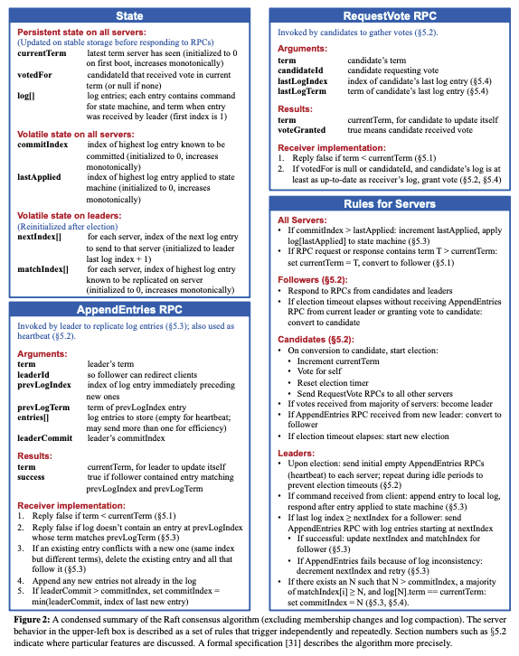

本文是阅读这篇论文过程中的一些笔记和个人思考。
概述
Raft是一个共识算法，一般作为一个共识模块为某个分布式应用服务，为上层的应用层提供透明的log备份（容错能力），以及修改操作定序的服务（正确性）。
在应用收到客户端的请求后，先委托下层共识层进行log备份，在下层共识模块成功备份操作log返回后，应用才会开始真正执行用户请求并相应客户端。
上层应用层的分布式应用应该可以被看作一个状态机，每次客户端的一次写请求都会触发一次状态机的状态变迁，这些写操作会以log的形式在状态机实例间传递，只要所有的状态机实例都以相同的初始状态开始并都接受相同的log输入（状态变迁），最终将得到一致的状态。
Paxos的问题
在过去十几年年，Paxos一直是共识算法的代名词，但是该算法有一些弊端：
- 人们很难理解并对其正确性有直观的认识，不利于教学，也使工业界为应用正确改造算法增加了难度。
- Paxos论文中大部分都是对single-decree paxos的描述，省去了很多muti-Paxos的实现细节，使得业界没有统一的实现。
- Paxos每次只能做一个决定，不适合构建实用系统，所以业界的最终实现都要基于Paxos大改。
Raft算法
Raft的特点
Raft中会先选出一个leader节点，由leader来接受请求并协调调度一切，这样简化了问题。
因为这种设计，Raft得以将共识问题拆解为以下几个相对独立的子问题：
- leader选举：当一个leader失效后，一个新的leader会被选出。
- Log复制：leader从客户端接受请求，然后复制到其他follower上。并且在log不一致发生时，在follower之间进行Log重同步。
- 安全性：在存在各种错误的情况下，保证所有应用实例都按照相同的顺序执行修改请求。
而Raft的正确性也可以通过被分解为以下几个子性质来进行证明，这些性质需要在Raft的任何阶段都一直成立：
- Election Safety：在任一个term中只能有最多一个leader被选中。
- Leader Append-Only：leader永远不会覆盖或者删除它自己的log，log修改操作仅限于追加。
- Log Matching：如果两个机器上的某两个log条目拥有着相同的下标以及term，那么这两个机器上该条目以及之前的条目都是一致的，即拥有相同的前缀。
- Leader Completeness：如果一个log在某个term被成功提交，那么该log会在未来的所有leader的log出现。换句话说，就是所有leader都会包含之前term所有的被提交的log。
- State Machine Safety：如果某个下标的log条目对应的写操作被某个状态机执行，那么所有的其他状态机在相同下标处执行的一定是同一个写操作。
下面是Raft实现的伪代码：

Raft基础知识
一个Raft集群往往会包含奇数（>1）个服务器，如果集群由2f+1 (f>0)个服务器组成，那么Raft能保证在最多有f个服务器失效的情况下系统还能正常工作。
Raft中的节点可能是如下三种身份之一：
- leader：处理所有请求的入口，follower不处理请求并会重定向用户请求到当前leader。
- follower：从不主动发起请求，只会被动响应来自leader和candidate的请求。
- candidate：只会在leader选举中存在。只有candidate才有可能被选为leader。
Raft并不使用物理时间，而是使用一种逻辑时钟term来描述相对的先后顺序。
term是一个连续增长的整数。每一个term都是由一个选举产生，在一个candidate被选中为leader的时候会将term加1。Raft保证每个term中只能有最多一个节点（0个或者1个）被选中为leader。

每个服务器都会持久化存储一个变量：current term，该变量只会单调增长。在服务器间交互时会请求会带上该变量，接受者不会接受来自更小term的请求；如果收到来自更大term的请求，那么会更新自己的current term，另外如果身份为leader或者candidate身份的服务器收到更大term的的请求（新leader宣示主权），那么他们会自觉的变为follower（识时务者为俊杰）。

基本的Raft算法实现只需要两种RPC请求：
- RequestVote：在candidate竞选leader时会发起该请求。
- AppendEntries：该RPC被用来在leader和follower之间复制log，并且也可被复用为心跳包请求（请求体log为空时即为心跳包）。
如果考虑到对磁盘和内存使用率的优化，为了实现日志压缩，还会涉及其他的RPC请求。
任何请求如果没有及时收到回复，都会进行超时重试。
leader选举
一个leader会通过周期性的其他follower发送心跳请求（AppendEntiries），来维持它的权威性，以此来抑制其他follower起义推翻自己。
如果一个follower在它的election timeout时间内没有收到来自当前leader或者其他candidate的任何请求，那么它就会认为当前的leader已经失效了，自己应该竞选成为新的leader。
一个follower的竞选过程大致如下：
- 将自己的当前term加1：currentTerm++
- 将自己的身份变为candidate
- 为自己投一票，并且将同时的向集群中的其他的机器发送RequestVote请求，索要选票。
- 该candidate的状态只会由以下三种事件所改变：
- 该candidate收到了集群中大部分（至少2f+1中的f+1个）服务器中的选票。其他服务器投票时遵循如下规则：一个term中最多只会投一票，而投给谁是按照先到先得决定。在收到的大部分服务器的选票后，该candidate会将自己身份变为leader，然后立刻向其他服务器发送心跳包以此宣示主权，抑制其他人再竞选leader。因为这里要求集齐大部分选票且每个服务器最多只有一票，所以可以保证一个term中最多只有一个服务器被选为leader。
- 如果在竞选期间该candidate受到了来自某个leader的心跳包，并且包含的term大于等于自己的当前的term，那么它会选择放弃竞选，重新变为follower等待时机。如果收到小于自己term的心跳包，则会继续竞选。
- 如果有很多follower在很短的时间内变为candidates竞选，那么会导致选票被分散，很可能没有一个人能够得到半数以上的选票，这样在该term中就没有节点能够被选为leader，各个candidate会相继触发超时，进入下一个term的竞选。
根据上面的表述，读者心中有一个担忧，如果这个竞选的过程一直被分票，永远或者长时间的循环下去怎么办。因为这个过程中因为没有leader产生，所以不能处理任何客户端的请求。
Raft的作者也想到了这个问题，核心的目标就是让尽量少的follower在短时间内参与竞选。
Raft的思路是通过在某个合理时间区间内随机生成各个服务器的election timeout，这样降低了同时竞选的概率。只要某个candidate在其他follower超时前成为leader并开始发送心跳包，那么就可以成功抑制其他人竞选。注意这里的超时时间是每次都会随机生成的，避免某次因为运气和其他服务器选到了相同或者相近的数字。
Log复制
假设已经集群已经选出了一个leader。
leader在收到来自客户端的请求后，会先将对应的命令追加到自己的log中，然后并行的向其他所有的服务器发送AppendEntries请求，要求他们也追加该log。
只有当超过半数的服务器都已经将该log持久化，这时应用层才会执行该条log对应的命令，然后向客户端返回执行结果（注意这里并不需要等到所有请求都返回，只要收到了刚刚超过半数的请求的时候就可以不再继续等待）。
不论leader是否已经将该log执行，只要某个follower没有成功返回，leader会不定的重发该请求，直到所有的log都最终被所有的服务器持久化保存。

Log是按照上图的样子进行组织的。每个条目不仅存储了状态机的命令，还存储的收到该请求时的term值。term值是用来在服务器之间检测数据不一致性的依据。另外每个条目还有对应的下标来标识它在log中的位置。
当leader确认某个其创建的log已经被大多数的机器所保存了，然后向上层应用返回时，这个log的状态被成为committed。Raft会保证所有committed的条目都最终会被所有正常工作的状态机所执行。
当某个log是committed了，那么我们可以知道所有该log前面的log都已经是committed的了。
当leader的状态机执行过该命令后，那么什么时候是其他follower执行该命令的时机呢？
leader中维护了一个变量记录着目前committed日志中的最大下标leaderCommit。该变量会在和follower的RPC请求中带上包含该变量的信息，这样follower就会根据请求中的信息判断出leader已经提交到了某个log，这时follower就会尝试将对应位置前的所有的未执行的log都进行执行。
正如前面所说，Log条目有如下两个性质：
- 如果不同服务器上的两个log条目具有相同的下标和term，那么这两个条目存储的应该是相同的命令。
- 如果两个log条目的下标和term是相同，那么由该下标之前的所有log条目组成的序列应该也是相同的。
对于性质一，因为一个leader在一个term中最多创建一个特定下标的log条目，而log条目的下标和term一旦创建是不会被修改的。
对于性质二，是通过AppendEnties的一致性检查机制保证的：在AppendEnties请求中，leader会包含最新的log的紧邻的前一个log条目的下标和term。当follower收到请求后，会根据这些比较对应下标位置的条目是否具有相同的term，如果不同，那么拒绝添加该最新log条目。所以根据数据归纳法，可以很容易得知，所以只要初始状态一致，性质二会一致保持。
在正常执行的情况下，这种一致性检查是不会失败的。
事情只有在leader突然奔溃了开始才变得有趣起来 :)。比如之前的leader的一些log在只发给小部分服务器后，leader就宕机了，这就造成了一些机器上的log的同一个下标对应的log条目可能不一致。

上图是一些可能的不一致情形，下面讲一下各种情况可能是如何导致的，假设当前为term 8：
- （a）~（b）：对应的节点a和b可能宕机了一段时间或者网络波动，错过了一些RPC请求，导致缺少了一些条目。
- （c）：c号节点可能在term 6的时候被选为了leader，然后term 6前两个条目成功被大多数节点所接受，但是最后两个条目在只发给部分节点时，c号节点就宕机了。
- （d）：d号节点在term 7的时候被选为leader，并且接受了两个客户端请求，但是在仅仅在d本地存储后，节点d就宕机了。
- （e）：e号节点在term 4被选为leader，然后部分条目committed了，部分没有。
- （f）：f号节点在term 2被选中leader，在自己存储了3个条目后宕机了，然后又快速的重启了，又被选中成了term 3的leader，在自己存储了5个条目后，又宕机了。
Raft强迫让所有节点全盘接受当前leader的log记录，重写那些不一致的条目，以此来解决可能出现的不一致现象。
这里会产生两个问题：
- 问题一：如何高效的利用leader的log覆盖所有的follower上的log。
- 问题二：为什么可以信任leader的log？凭什么leader的log就一定是对的，可能丢失一些commited的条目吗？
第二个问题涉及leader的选举机制，会在下一节讲解，这里先讨论问题一。
对于问题一，很显然直接广播leader的全部log是可行，但是很低效的策略。
可以观察到纵观所有的follower上的log序列可能性，可以发现follower一定是和leader有一个相同的log前缀的（因为上面讲的log的性质二，只要某个点是相同的，前面的所有的都是相同的）。所以为了尽可能减少传输的log数量，策略就应该是：找到leader和每个follower的log序列开始不同那个点，从leader传输从那儿开始的后面的所有log进行覆盖。
根据以上思路，leader为每一个follower都维护了一个nextIndex变量，用来指示下一个leader应该发送给该follower的log条目的下标。每任leader的nextIndex的初始值为当前leader的log记录中的最大下标再加一（最开始乐观的认为大家都是一致的）。
在本篇论文中，要求leader每次AppendEntries因为一致性检查返回错误的时候，将对应follower的nextIndex减一，然后重发请求，带上nextIndex到最大下标这个区间内的所有log条目，该算法的正确性是比较明显的，一个一个的去试探，最终AppendEnties一定会返回成功，让该follower与当前leader的log一致。
但是可以想到，这种一次只减少1个单位问题规模的算法是还可以有优化空间的，论文中提供了一个优化思路：
让follower在AppendEntries返回错误的时候，再返回一些额外的信息：
- xTerm：进行一致性检查时，follower上比较的那个条目的term。
- xIndex：属于xTerm的所有条目中第一个条目的下标。
- xLen：若进行一致性检查时，发现对应位置并没有条目，那么返回当前follower的log的数量。
在leader收到这样一个错误回复后，一共只有三种情况：
- leader的log中也存在xTerm的条目：找到leader中xTerm条目的最后一个条目的下标，这里记为n，设置nextIndex=n+1。跳过所有比xTerm大的条目的比较。
- leader的log中不存在xTerm的条目：设置nextInex=xIndex。直接跳过所有的大于等于xTerm的条目的比较。
- 因为对应位置没有条目，所以follower没有返回xTerm：将nextIndex设置为xLen。跳过所有为空的条目。
读者可能会想说为什么不能用二分查找呢？
我也曾有这样的想法，但是考虑到在生产环境中机器发生故障的概率是比较低的，可能机器在运行了几个月甚至几年才会出现一次问题，此时，其实两个机器之间log的差异并不会特别巨大，可能仅仅是在log尾部有一些些不同，使用二分查找的网络请求可能会更多。并且就算有个机器落下了很多很多log，因为现实中错误的偶然性，大多数情况下集群会在某一个term下运行很久才会遭遇错误换一次term，所以上文描述的这种以term为单位来缩减问题规模的策略很高效。
安全性
现在讨论Raft是如何保证每个状态机能够按照完全一致的顺序执行相同的命令。
比如，有没有一个宕机了很久的机器突然又上线了，然后被选中成为了leader，然后强迫其他节点接受自己过期的数据呢？
选举时的限制
Raft要求所有当选的leader都有全部的committed条目。
在投票过程中，为了不让数据不全的candidate赢得选举，每个投票的选民在投票前都会和对应candidate比较一下最新的一条log信息，选民只会投票给拥有更“新”数据的candidate。
判断数据新旧的标准为：
- 如果candidate的最后一个log的term和选民的不一样，且candidate的term更大，那么选民才会投他。
- 如果candidate的最后一个log的term和选民的一样，且candidate的log长度更长，那么选民才会投给他。
安全性证明
下面开始证明为什么所有当选的leader一定拥有所有committed的条目：
这里采用反证法，我们假设某个leader不包含所有的commited的条目，然后通过得到矛盾来证明该观点。
假设有一个在term T的leader在该term下commit了一个log条目L，但是这个log条目并没有在未来某个term的leader的log中出现。这里选后面的首次没有持有该log的leader对应的term U（U>T），且记该leader为leaderU。
- 因为leader从来不删除或者覆盖条目，所以leaderU在当选的时候就已经不存在那个条目L了。
- leaderT在提交该log L的时候一定是将该log L条目存储到了超过半数的集群节点上，而leaderU当选时也必定收到了超过半数的集群节点的选票。那么，至少这两个节点集合之间一定存在一个交集，我们从该交集中选取一个节点N。
- 节点N必定在给leaderU投票之前，存储了该log L。不然，该节点将再没有机会存储该log L，因为现在的term U已经大于创建该log的term T了，该节点会拒绝存储该log L。
- 根据假设，leaderU是第一个没有存储该log L的leader，所以leaderU之前的leader是存储有该log L的，因为leader从不删除log，而follower的log会和leader一致。可以知道节点N在给leaderU投票的时候是拥有该log L的。
- 因为节点N给leaderU投票了，那么说明leaderU的log至少和节点N一样“新”。那么就会导出两个矛盾点：
- 首先，如果节点N和leaderU的最后一个log具有相同的term。那么leaderU的log的长度至少和节点N一样长，所以leaderU应该包含节点N的所有的log。这就是一个矛盾，因为根据假设leaderU不应该拥有节点N拥有的该log L。
- 又或者，leaderU的最后一个log的term是大于节点N的，更进一步，是大于T，因为节点N的log的最后一个条目的term至少为T。根据假设，创建的leaderU的最后一个log条目的leader M一定包含log L。所以根据Log Matching性质，只要某一个log条目相同，前面的所有条目都相同，所以leaderU应该包含M中包含的那个log L。这又导致了矛盾。
至此证明了，所有未来的选中的leader都会包含全部的committed的log。所以可以得到所有的状态机都会按照相同的顺序执行全部的committed的log。
follower和candidate失效
在Raft中follower和candidate使用相同的策略应对失效：
- 如果一个follower或者candidate在接受请求之前奔溃了，那么所有发给他们的RPC都会失败，然后请求发起方会不定时的重发请求，所以只要他们重启了，请求就能被正常的处理。
- 如果一个follower或者candidate在处理完请求后返回请求前时奔溃，那么当他们重启后，可能会重复执行相同的请求，但是在Raft中重复执行并不会破坏状态。比如，一个follower收到一个AppendEntries请求包含了一个已经添加过的log，那么他会忽略该请求。
可用性和时间选择
本节主要讨论关于election timeout的选择。
可以想象该超时时间不能太小，如果太小，小到短于正常的一次网络请求的延迟，那么集群就非常频繁的进行leader选举，因为很可能心跳包还在网络上传输的时候，follower就等不及超时竞选了。
该超时时间也不能设置的太大，因为如果太大，在该时间内leader奔溃了，follower们会迟迟不进行新的选举。
上面两种极端情况下，都会造成集群无法继续处理客户端请求，降低集群可用性。
所以为了选到一个合适的时间，应该要满足如下一个不等式：
broadcastTime << electionTimeout << MTBF
- broadcastTime：某个服务器并行向其他所有服务器发起一轮RPC请求并且受到回复的时间。broadcastTime应该比electionTimeout少一个数量级。这样leader能够可靠的发送心跳包来抑制新的选举的发送。
- MTBF：单机发生故障的平均耗时。electionTimeout应该比MTBF低几个数量级。这样能保证在leader失效时，集群能够及时作出反应选出新的leader。
一般来说，electionTimeout选择10ms~500ms之间的某个数值。
集群成员变化
到目前为止我们都是假设集群的配置信息是固定不会改变的。但是在实际使用中，我们偶尔有修改集群配置的需求，比如：替换那些生效的服务器，修改备份级别等等。
当然要实现集群成员的变化，我们可以通过让整个集群都下线，再更新配置文件，然后重新启动整个集群来做到。但是这会导致在这段时间内整个集群都无法工作。另外如果整个过程中涉及任何手动操作，还会存在误操作的风险。为了避免这些问题，作者将配置变更自动化，并放入Raft成为了共识算法的一部分。
为了让这个配置变更的过程安全，必须要保证整个过程中不能同时存在两个leader。

但是不幸的是，任何让所有服务器直接全部从老的配置切换到新的配置的方法都是不安全的。
如果我们想让整个集群切换到一个新的配置，记为Cnew，那么我们如果向当时的集群中所有节点发送Cnew让他们应用Cnew，但是就如上图所示，即使已经有超过半数（3个）的节点已经采用了新的Cnew，只要此时Cold中的节点因为某种原因超时了也开始竞选，那么通过获得Cold集群中的2票（除自己外1票）即可当选leader（因为Cold不知道新增机器的存在所以这一票一定来自S2），此时整个集群中就出现了两个leader。
为了确保安全性，配置切换需要使用两阶段的方式进行。可以有很多种方式来实现这种两阶段切换，比如，有的系统会在第一阶段中先让Cold的机器都失效，不再处理客户端请求，然后第二阶段启用新的配置。

为了解决这个问题，Raft通过让配置信息作为一个特殊的log条目进行在集群中传播，这种条目和正常其他的条目一样也使用AppendEntries接口进行广播复制，和其他log的唯一不同点是，任何节点在收到某个配置的log信息时会立即应用该配置。
另外除了旧配置Cold和新配置Cnew外，Raft还引入了一个中间态配置Cnew, old。在Cnew, old配置下的leader要提交（commit）一个log，需要同时获得Cold和Cnew集群下超过半数节点的支持。而当Cold和Cnew集群下超过半数的节点均变采用了Cnew, old配置时，我们称Cnew, old被committed，对应的整体集群状态为joint concensus。
假设新增的服务器已经存储了最新的log数据，并采用的是Cnew, old状态启动加入现有集群：
- 客户端向当前集群的leader发送配置变更为
Cnew, old的请求。 - 集群leader接受到配置
Cnew, old后，将其作为log条目保存，并应用该配置信息。 - 为了提交最新的这个特殊的log条目
Cnew, old，该leader会尝试同时向Cold集群以及Cnew集群的节点进行广播复制该log（通过AppendEntries RPC）。 - 如果在
Cold集群以及Cnew集群中的大多数节点均接受Cnew, old之前，leader宕机了，那么新的leader可能在Cold或者Cnew, old配置的集群中产生，但是这并不会阻止Cnew, old最终被提交，因为客户端会进行重试重发请求，所以这里整个流程会回到步骤1。最终还坚持Cold的节点的数量将会下降到不足以支持选出一个Cold的leader。 Cnew, old成功被在Cold集群以及Cnew集群中的大多数节点均接受，即Cnew, old被成功提交。至此，依旧还在Cold配置下的所有节点（如果还存在的话）已经不可能选出leader了，因为大部分Cold的节点已经变为Cnew, old了。新的leader只可能在采用Cnew, old配置的机器中产生。- 在收到
Cnew, old提交成功的响应后，客户端再向当前Cnew, old配置的leader发送配置变更为Cnew的请求。 - 当前的leader收到
Cnew配置后，会将其作为log条目保存，并应用该配置信息。 - 此时leader只会向新配置
Cnew中所包含的服务器进行广播logCnew。 - 假设在将
Cnew成功复制给大多数节点之前，当前leader宕机了。那么此时依旧不可能产生Cold配置的leader，新的leader只可能在Cnew, old或者Cnew中产生，但是这并不会阻止Cnew最终被提交的进程，因为客户端会进行重试重发请求，这里流程会回到步骤7。 - 当最终
Cnew配置最终被提交时，整个配置变更就已经完成了。
整个过程中集群始终可以处理客户端请求。
以上方法的核心思想在于，引入了一个中间状态Cnew, old，该状态下的leader不可能和Cold状态或者Cnew状态下的leader共存，因为他们当选需要的选民有交叉，而选民只能投一票。这样就保证了配置切换过程中不可能同时出现两个leader。
其实写到这里我还是有个疑问，如果在上文步骤3的时候，发生了网络分区将
Cold的节点都划到了一起，那么不就有可能同时有两个leader存在了吗，一个是Cold一个是Cnew, old。
上面流程的假设是新增的服务器已经存储了最新的log数据，但是一般是不太可能的，新的服务器需要一个时间来进行log同步。为了在这段数据同步的时间内集群还是能够继续工作，Raft引入了一个新的角色non-voting member，这种角色下的服务器只能拷贝log，在leader统计超过半数节点时不算入其中。当log已经同步之后，就可以按照上面的流程来进行配置变更了。
另一个问题是集群的leader可能在Cnew中被剔除了，那么这种情况下，该leader会在Cnew配置log提交的时候，自动变为follower。所以可以想象其实会有一段奇怪的时期，该leader不属于Cnew集群但是却管理着该集群，所以在这段时间，其统计超过半数节点时不把自己算进去。
还有一个问题是那些被移除集群的服务器可能会骚扰集群。因为Cnew配置下的leader并不会给这些节点发送心跳包，所以他们会频繁的变为candidate进行竞选leader，向其他节点发送RPC，这可能会导致当前的leader被迫变为follower，这种情况会不断的发生，影响集群正常工作。
为了解决这个问题，可以通过让follower在收到leader请求后的min(election timeout)时间区间内拒绝响应任何收到的投票请求RequestVote RPC。
Log compaction
Raft中的log和用户的请求相对应的，在实际使用过程中，我们不可能让log的无限制的增长。因为随着log的增长，其占用的内存、磁盘空间会更大，并且宕机恢复的时间也会更长。如果不加限制，这些问题最终都会导致服务不可用。
快照Snapshot是解决该问题的最简单的方法。快照是将状态机某个时刻的状态持久化存储，然后就可以安全的将该时刻前的所有的log都丢弃了。
还有增量进行compaction的方法，比如log cleaning和LSM树。

上图展示了Raft中关于snapshot实现的基本想法。
每个服务器会独立的进行快照，快照仅仅会涉及他们各自的committed的log。快照中除了状态机的状态信息外，还会写入一些元信息：
- last included index：可用该快照替换掉的log中下标最大的那一个。
- last included term：上面所说的同一个log条目的term值。
- 为了支持集群成员变化功能，快照中还会写入对应时刻最新的配置信息。
持久化last included index和last included term是为了让节点做快照紧邻的下一个log的一致性检查时用的。这样leader在遇到远远落后的follower，并发现它自己已经丢弃了要发送给follower的log条目的时候，直接发送snapshot。

leader使用一个新的RPC叫InstallSnapshot来向follower发送snapshots。
通常follower收到的snapshot中会包含更“新”的数据，这样follower就会全盘接受该snapshot覆盖自己的log。
如果follower收到的snapshot所包含的数据已经在follower的log中存在（可能因为重传或者错误发送导致），那么follower依旧会接受该snapshot，然后删除该snapshot所覆盖的到的log，但是保留那些在snapshot之后的有效的log。
接下来讨论两个可能影响snapshot性能的问题：
- 首先，各个节点需要决定什么时候进行快照。快照的频率不能太高，这样会导致浪费大量的磁盘带宽以及能源。同样如果快照太不频繁，那么节点的内存可能会有告急风险，并且未来宕机重放未快照的log的时间也相应变长。一个策略是当log到达一定的大小的时候就触发快照，这样只要被删除的log的大小远远大于生成的快照的大小，那么磁盘带宽上的损耗就比较小。
- 第二，向磁盘中写入快照需要消耗很多时间，这可能会阻碍处理正常的操作。解决方案就是使用write-on-copy技术，这样接受新的log就不会影响到快照任务。论文作者的实现是采用操作系统提供的fork来实现，因为fork最初是和父进程共享虚拟内存页表，并标记为write-on-copy，只有需要修改操作时，才会触发页错误进行拷贝指定页表。
客户端交互
Raft系统的客户端会将他们的所有请求都发给leader。当一个客户端刚启动的时候，会随机选择一个节点进行连接，如果该节点并不是当时的leader，那么该节点会拒绝该请求并返回其记录的关于最新leader的信息。如果该信息中指向的leader宕机了，那么客户端会重新随机选择连接一个节点。
论文作者的目标是让Raft具备linearizable semantics，就是能够让单进程上的执行顺序符合program order，多进程之间的非并发操作执行顺序符合物理时间上的相对顺序。换句话说就是要求A写入了x结束后, 接下来B一定能读出来。
但是就目前的描述来说是满足不了的，因为在Raft中有可能某个请求会被重复多次执行，比如如果leader在commit一个log条目后向客户端响应前宕机了，那么客户端会因为超时而重发该请求，这会让集群第二次执行该请求。解决方案是通过让客户端为每个请求设置一个唯一的serial number。
虽然读请求并不需要写任何log，但是如果没有额外的措施的话，可能会读到过期的数据，这会破坏linearizablity。
可能导致返回过期数据的原因有：
- 在一个leader刚上任的时候，虽然根据性质他有全部的committed的log数据，但是他刚开始并不知道哪些log是committed，哪些不是。为了得到这个信息，需要leader在该term提交一个log，但是如果这样的话，系统就只能在直到收到一个写请求后才能服务读请求。这样无疑是低效的，所以raft通过让每一个刚上任的leader都提交一个空的
no-oplog条目来获取committed信息。 - 一个leader在试图返回读请求的时候，实际上可能已经有新的leader产生了，其持有的数据已经非最新的了。为了解决这个问题，raft要求在返回读请求前先向集群中大多数的节点进行一次心跳请求，这样根据
election timeout的下界，可以保证一小段时间内不会有新的leader产生，并且可以增加类似lease的机制：让收到心跳的节点在一定时间内不允许给其他leader投票，这样在这段时间内返回客户端请求就是安全的（但是这种方式会依赖绝对时间，如果要保证绝对的安全性可能需要一些额外的机制来进行保障）。
附录：阅读过程中的一些问题
Raft有没有为了可理解性和简单性牺牲掉一些东西？
有，Raft牺牲了一些性能，比如：
- 每个请求都必须要进行持久化操作。为了性能更高效的做法应该是打包很多操作一起写入磁盘。
- 集群一次只能处理一个AppendEntries。因为follower会拒绝执行失序的AppendEntries。使用pipeline流水线工作可能更好。
- 快照的机制是为那些状态比较少的状态机设计的，因为如果状态数据很大，每次全部写入磁盘会很低效，此时应该仅仅存储和上次相比增量的部分。
- 类似的，为了让落后的follower同步最新的log信息，不一定要发送完整的快照信息，应该可以利用follower本地已存在的快照信息来减少传输的数据。
- 服务器不能充分利用多核，因为状态机一次只会（按照log的顺序）执行一条指令。
这些都可以通过修改Raft来实现，但是这样会让Raft在教学上少了很多价值。
有没有什么共识算法是不需要选举leader的？
有很多基于Paxos的算法不需要leader或者选举，所以他们不会因为leader选举而导致系统服务暂停。但是作为代价，他们为达成一致所需要的发送的请求数往往更多。像Raft只需要一轮广播即可达成共识。
假如在发生网络分区时，一个新leader在一个含有大多数节点的分区内产生，而旧leader在另一个分区内。那么旧的leader会如果工作？
假设旧leader所在的分区内只包含少于半数的节点，那么旧leader无法提交新的log，因为它无法获取到超过半数节点的回复。
假设旧leader所在的分区是和新leader的分区内的节点有交集，即旧leader能够和超过半数的节点进行交互，此时旧leader还是无法获得超过半数节点的回复来进行提交log，因为在分区节点交集部分的节点因为旧leader的term值更小会拒绝进行执行RPC。
当有些节点已经失效了，此时的超过半数是指还在工作的机器的半数，还是全部服务器的半数？
始终是全部服务器的半数。
除了宕机，还有没有其他什么原因让leader下台？
有的。比如如果leader的CPU很慢或者它的网络环境不好导致很多丢包、或者传输过慢，这样其他的follower可能就会超时进行选举。
为什么Raft的log是从1开始作为下标的？
其实还是应该看成是从0开始的，并且下标为0的log的term为0。这得以让第一个AppendEntries RPC可以用0来做为PrevLogIndex，而不至于用-1这个非法的下标。
什么样的应用适合构建在Raft之上？
最好是自包含（self-contained）的应用，即不需要和其他外部的服务进行交互来修改状态。因为如果要和外部服务进行交互的话，那个外部服务也需要能够在任何时刻（某个机器奔溃了、网络分区了、刚重启等等）都支持正确处理重复请求，该外部服务需要为所有的重复的请求提供一致的回复。
比如，一个商场系统的下单服务构建在Raft之上，而该下单服务在处理请求的时候需要请求外部的一个信用卡服务进行扣款。那么我们肯定不希望因为重复的请求让信用卡多次扣费。
non-voting服务器目的是什么？
我猜测leader在有non-voting服务器存在的时候，计算集群总数的时候是除掉这些non-voting服务器的，所以后面的提交能够继续推进。（不知道是否会存在问题）
目的是让这些刚启动的服务器能够在不影响提交新的log的情况下进行同步log信息。这样就可以让配置变更的过程加快。因为如果没有non-voting这个设定，会有两个问题：
- 这些新的服务器会因为同步信息让
Cnew, old的提交必须等到他们同步完后才能完成。 - 并且没有客户端的请求能够在这段时间内被处理。
什么情况下一个follower会收到一个落后于它的快照？
网络可能会导致请求乱序到达。比如一个leader先发了一个下标为100的快照，再发了一个下标为110的快照，结果下标为110的快照先被收到。
如果在服务器读取应用一个快照的过程中奔溃了，怎么办？
InstallSnapshot的实现必须要是原子的。